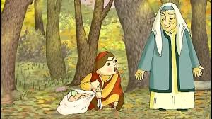

Zumrad va qimmat (2-qism)
Nihoyat bir yorug‘lik ko‘rina boshlabdi. Zumrad o‘sha tomonga qarab yura boshlagan ekan, bir kichkina uycha yoniga kelib qolibdi. Derazadan mo‘ralasa, ichkarida bir kampir o‘tirgan ekan. Eshikni taqillatib. ichkariga kiribdi. Salom beribdi. Keyin boshidan kechirgan voqealami aytib beribdi. Kampir sehrgar ekan. U Zumradni iliq, mehribonlik bilan kutib olibdi. -Xafa bo‘lma, men senga yordam beraman. U Zumradni ovqatlantiribdi, ovutibdi, erkalabdi. — Meni o‘z onamdek qabul qildingiz, — debdi Zumrad. — Sizga qanday qaytarsam ekan, men ishdan qochmayman, ishlaringizni jon-dilim bilan bajaraman. Zumrad kampirga juda yoqib qolibdi. Uni erkalab, qo‘g‘irchoqlar beribdi, ertaklar aytib beribdi, qiziq-qiziq kitoblar ko‘rsatibdi. Shunday qilib ular ancha kun birga yashashibdi. Zumrad kelgach, uy saranjom-sarishta, chinniday toza bo‘lib qoldi. Bir kuni kampir osh qilmoqchi bolib: Qizim, tomga chiqib o‘tin olib tushgin, — debdi Zumradga. Xo‘p bo‘ladi, buvijon, — deb Zumrad tomga chiqibdi. Tom juda baland ekan, u yerdan hammayoq ko‘rinar ekan. Qiz atrofni tomosha qilib turib, qadrdon uyiga ko‘zi tushibdi. Yuragi uvishib, yiglab yuboribdi. Nega yig‘layapsan, jon qizim? so‘rabdi kampir. — Uyimizni ko‘rib qoldim, otamni sog‘indim, — deb Zumrad yig‘lab yuboribdi. Kampir uni yupatibdi, osh eyishibdi, keyin ertak aytib beribdi. Qiz uxlab qolibdi. Qizginam, o‘yinchoqlaringni yig‘ishtir. Seni uyingga jo‘nataman, -debdi kampir.-Tomda qizil va oq sandiq bor. Oq sandiqni qoldirib, qizil sandiqni olib tush. O‘zi esa o‘rmonga kirib ketibdi. Zumrad narsalarini yig‘ishtirguncha, u saman ot qo‘shilgan aravani yetaklab kelibdi. Aravaga qizil sandiqni joylabdi, Zumradni esa o‘tqazib: Kalitni ushla. Uyingga borganingdan keyin sandiqni ochasan, debdi. Qiz kampirga minnatdorchilik bildirib, xayirlashibdi-da, yo‘lga tushibdi. Shu payt chol qizini sog‘inib, ostonada o‘tirgan ekan. Salom, otajon! — deb otasining bag‘riga otilibdi. Qizining soq‘-salomat ekanligidan xursand bo‘lgan chol, anchagacha ko‘z yoshlarini to‘xtatolmabdi. Oppog‘im, men nodon cholni kechir! Ular uyga kirishibdi. Qo‘ni-qo‘shnilar yig‘ilibdi. Zumrad kalit bilan sandiqni ochibdi. — Voy-bo‘!!! — hayron bo‘ganliklarini yashirol mabdilar atrofdagilar. Sandiq qimmatbaho kiyimlar, shoyi va taqinchoqlarga liq to‘la emish. Zumradning butun umriga yetib, ortar emish. O‘gay ona esa bularni ko‘rib bezovta bolib, tipirchilab qolibdi. Shu ondayoq Qimmatni ham o‘rmonga olib borishni buyuribdi. Chol tezda otlanib, Qimmatni qalin o‘rmonga olib boribdi. Kech kirganda Qimmat cholning boltasi osib qo‘yilgan daraxt tagiga kelibdi. Baqirib, ho‘ng-ho‘ng yig‘labdi. Vahimaga tushib, yugura boshlabdi, nihoyat, kampirning uyi yoniga kelib qolibdi.